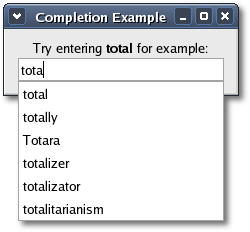

|
Entry Completion
Gtk::EntryCompletion is an auxiliary object used in conjunction
with Gtk::Entry to provide completion functionality. Essentially,
EntryCompletion maintains a pop-up tree view window with a tree model,
usually
a ListStore, that lists one or more completion matches.
'Completion functionality'
means that as the user types text into an entry widget,
EntryCompletion compares
the current text (the key) with its list of completion matches. If any
possible
completions for the key are found they are displayed in the
pop-up window. EntryCompletion implements
the Gtk::CellLayout interface to allow the user to add extra cells
displaying completion matches to the tree view. By
default, the matching is done by comparing the text
case-insensitively against the text column of the completion model, but
this can be overridden with a custom match
function.
When the user selects a completion, the content of the entry is
updated. By default, the content of the entry is replaced by the text
column of the model, but this can be overridden by connecting to the
"match-selected" signal and updating the entry in the signal handler.
Note that you should return true from the signal handler to suppress
the default behaviour.
You can create a completion object with one of the following
constructors:
EntryCompletion();
EntryCompletion(Gtk::TreeModel& model);
The second constructor creates an entry completion that uses the
specified model. The first constructor creates an empty entry
completion. If you call this constructor you can set the model later by
calling:
void set_model(TreeModel& model);
To add completion functionality to an entry widget, call the following
Gtk::Entry method:
void set_completion(EntryCompletion
*completion);
Alternatively, you can create an EntryCompletion object, set its model
and assign it to an Entry widget all with one function call,
using
this Gtk::Entry method:
Gtk::EntryCompletion*
create_completion(Gtk::TreeModel& model);
The 'model' argument is the completion model for the entry completion.
The new EntryCompletion is owned by the Entry widget so you can safely
use the returned pointer without reference counting.
For convenience, you can call the following method to set up the
completion to have a list displaying strings only:
void set_text_column(int column);
This method adds a text cell renderer to the completion and sets
'column' as the column in the completion model to get the strings from.
This is equivalent to creating a new text cell renderer yourself,
adding it to the
completion, and then calling Gtk::CellLayout::add_attribute() to set
the text column.
When entry completion using a small key takes a lot of time (for
example, when the
dataset is too large) you can set the minimum key length required to
start completing:
void set_minimum_key_length(int length);
In addition to regular completion matches, which will be inserted into
the entry when they are selected, EntryCompletion also allows you to
display 'actions' in the pop-up window. Their appearance is similar to
menu items, to differentiate them clearly from completion strings. When
an action is selected, the "action-activated" signal is emitted.
To insert an action in the completion's action item list, call one of
the following two methods:
void insert_action_text(int index, const
String& text);
void insert_action_markup(int index, const String& markup);
Both methods insert the text string at position 'index' in the list.
However, the second method allows you to insert text marked up with the
Pango
text markup language.
To delete an action from the completion's action list, call:
void delete_action(int index);
EntryCompletion Example
Here is a simple example that shows you how to add a completion object
to an entry widget. The header file for the example is
<entrycompletion.hh>
#include <xfc/main.hh>
#include <xfc/gtk/liststore.hh>
#include <xfc/gtk/window.hh>
using namespace Xfc;
class CompletionModel : public Gtk::ListStore
{
public:
CompletionModel();
};
class Window : public Gtk::Window
{
public:
Window();
virtual ~Window();
};
and the source file is <entrycompletion.cc>
#include "entrycompletion.hh"
#include <xfc/gtk/box.hh>
#include <xfc/gtk/cellrenderertext.hh>
#include <xfc/gtk/entry.hh>
#include <xfc/gtk/entrycompletion.hh>
#include <xfc/gtk/label.hh>
#include <iostream>
CompletionModel::CompletionModel()
: Gtk::ListStore(1, G_TYPE_STRING)
{
// Fill the list with possible
completions
Gtk::TreeIter iter = append();
set_value(iter, 0, "total");
iter = append();
set_value(iter, 0, "totally");
iter = append();
set_value(iter, 0, "toto");
iter = append();
set_value(iter, 0, "tottery");
iter = append();
set_value(iter, 0, "totterer");
iter = append();
set_value(iter, 0, "totipotent");
iter = append();
set_value(iter, 0, "totipotency");
iter = append();
set_value(iter, 0, "totemism");
iter = append();
set_value(iter, 0, "totem pole");
iter = append();
set_value(iter, 0, "Totara");
iter = append();
set_value(iter, 0, "totalizer");
iter = append();
set_value(iter, 0, "totalizator");
iter = append();
set_value(iter, 0, "totalitarianism");
iter = append();
}
Window::Window()
{
set_title("Completion Example");
set_border_width(5);
Gtk::VBox *vbox = new
Gtk::VBox(false, 2);
vbox->set_border_width(5);
add(*vbox);
Gtk::Label *label = new Gtk::Label;
label->set_markup("Try entering
<b>total</b> for example:");
vbox->pack_start(*label, false, false);
// Add entry widget
Gtk::Entry *entry = new Gtk::Entry;
vbox->pack_start(*entry, false, false);
// Create the completion model
Pointer<Gtk::ListStore> completion_model = new
CompletionModel;
// Create the completion object.
Gtk::EntryCompletion *completion =
entry->create_completion(*completion_model);
// Use model column 0 as the text column
completion->set_text_column(0);
// Show everything
vbox->show_all();
}
Window::~Window()
{
}
int main (int argc, char *argv[])
{
using namespace Main;
init(&argc, &argv);
Window window;
window.signal_destroy().connect(sigc::ptr_fun(&Xfc::Main::quit));
window.show();
run();
return 0;
}
Compiling EntryCompletion
If you compiled and installed XFC yourself, you will find the source
code for EntryCompletion in the
<examples/howto/entrycompletion> source directory along with a
Makefile. If
XFC came pre-installed, or you installed it from an RPM package, you
will
find the source code in the
</usr/share/doc/xfcui-X.X/examples/howto/entrycompletion> subdirectory.
In
this case you will have to create the Makefile yourself (replace X.X
with the
version number of the libXFCui library you have installed).
To create a Makefile for EntryCompletion, add the following lines to a
new
text
file
and save it using the name "Makefile":
CC = g++
CFLAGS = -Wall -O2
entrycompletion: entrycompletion.cc entrycompletion.hh
$(CC) entrycompletion.cc -o entrycompletion
$(CFLAGS) `pkg-config xfcui-X.X --cflags --libs`
clean:
rm -f *.o entrycompletion
If you cut and paste these lines make sure the whitespace before $(CC)
and rm is a tab character. When you
compile and run this program you will see the following window appear:

As you type the word "total" into the entry, a list of possible
completions pops up and progressively gets smaller as you type. You
will find a more advanced entry completion example in the
<tests/entrycompletion> subdirectory that implements a custom
match function, dynamic entry completion, and shows you how to handle
images.
| Copyright
© 2004-2005 The XFC
Development Team |
Top
|
XFC
4.4
|
|